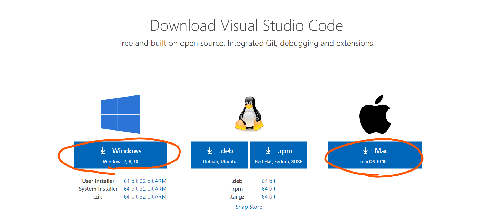
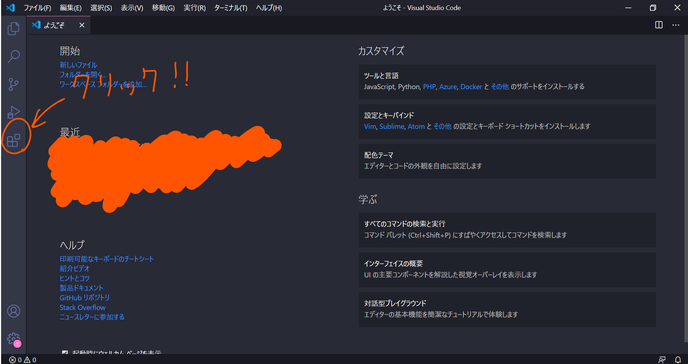
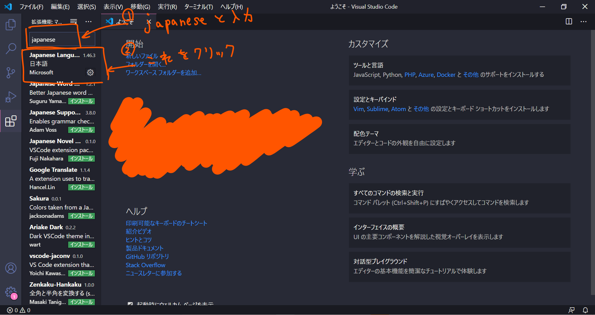
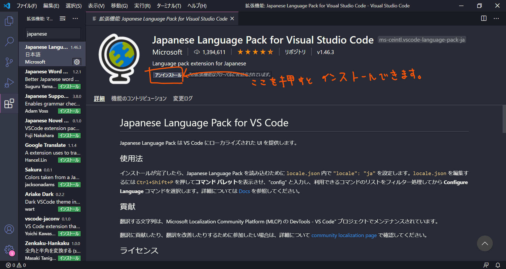

概要
\(\rTeX\)をインストールしVScodeで\(\rLaTeX\)を使えるようにするゼミです。
二回に分けてゼミを行いたいと思っています。
二回に分けてゼミを行いたいと思っています。
準備するもの
Windows または Mac，あと時間(○○時間くらい？かかります)
容量は10GB弱ほど使います。
容量は10GB弱ほど使います。
インストールするもの
- TeXLive2020
- VScode
やり方
１.VScode，TeXLive2020のインストール
VScode → TeXLive2020の順番でインストールします。
・VScode
こちらのリンクをクリックします。 すると下のような画面になると思います。
Windows，Macのどちらかをクリックしてダウンロードしてください。(VScodeインストール済みの人は大丈夫です。)

インストーラ―を実行していい感じにポチポチしていけばインストールされるはずです。VScodeをインストールすることができたら，開いてください。 英語でいろいろ書いてあると思います。これを日本語に対応させたいと思います。 (自分はすでにインストールしているので表示が一部違っています申し訳ございません。)

ここをクリックすると次のような画面になると思います。そうしたら，入力部分があるのでそこに"japanese"と入力して， おそらく一番上に出てくる"Japanese Language Pack for Visual Studio Code"を選択します。

すると，下の画面のようになります。そうしたら，"インストール"(私の画面ではアンインストールと書いてあります)というボタンがあるのでそれをクリックしましょう。

そうしたら，一度VScodeを再起動しましょう。日本語になっていると思います。VScodeのインストール等はひとまずここまでです。
・TeXLive2020
次に，TeXLive2020をインストールします。
WindowsとMacによってやり方が違うので分けてやります
Windows
内容です
Mac
内容です
終わりに
これからについて書いていきます。
参考文献
参考文献です